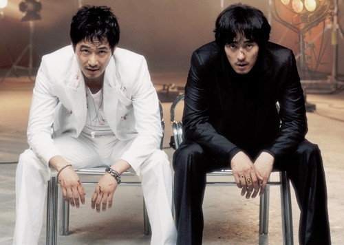

トップ > 映画評論・レビュー・感想 >
「映画は映画だ」 ソ・ジソブ×カン・ジファン 骨太に
「映画は映画だ」 ソ・ジソブ×カン・ジファン 骨太に
岩渕弘美2008/12/23
ソ・ジソブ、カン・ジファン共演のアクション「映画は映画だ」。俳優を夢見るヤクザと、
ヤクザのような俳優。異なる世界に住む男二人の、出会いと対決を骨太に描く。

俳優を夢見るヤクザのガンペ（ソ・ジソブ）と、気性の激しいスター俳優のスタ（カン・ジファン）。住む世界のまったく違う二人が、高級クラブではちあわ
せる。ガンペはサインを求めるが、スタはあからさまに見下した態度を取る。出会いは最悪だった。「映画は映画だ」(c)2008 SPONGE AND KIM KI-DUK FILM, ALL
RIGHTS RESERVED
しかし、スタは傲慢さが共演者に嫌がられ、映画製作に行き詰まってしまう。そこでガンペに共演を持ちかけた。裏社会で生きるガンペは、夢だった俳優の仕 事に心が揺れる。そこである条件を出し、出演を承諾する。条件は「二人が戦うシーンは、本気で勝負する」というものだった。撮影が始まった。ひょんな形で 夢をかなえたガンペは演じる喜びを感じていた。共演女優のミナ（ホン・スヒョン）とも親密になり、つかの間の幸せを感じる日々。ガンペの中で何かが変わり 始めていた。
一方、スタは“本気の勝負”に向け、トレーニングに余念がない。ところがある日、恋人との密会現場の盗撮テープが届いて脅迫される。スターであるがゆ え、コソコソ密会していた彼女との仲も、うまくいかなくなっていた。スタはヤクザの手荒なやり方に困惑しながらも、ガンペの助けを借りて問題を解決する。 そして、兄のように慕っていたマネージャーが、事件にかかわっていたと知り、ショックを受けるのだった。
撮影は順調に進み、クライマックスの対決シーンを残すのみとなった。しかし、ガンベは組織内で問題を抱え、これ以上の出演のは無理と判断。降板を申し出 る。再び共演者を失い、途方にくれるスタ、ミナ、監督。そこへ傷だらけのガンペが戻ってくる。それぞれの思いを胸に、クライマックスの撮影が始まった ──。
二人が本気で戦うクライマックス、干潟での対決は圧巻。泥まみれでぶつかり合い、迫力あるシーンになった。見どころのアクションなどを、劇中映画のワン シーンとして見せる手法も面白い。本編のストーリーの邪魔にならず、凝った演出だ。
「映画は映画だ」はタイトル通り、映画への思いがぎっしり詰まっている。韓国の鬼才、キム・ギドク監督が製作し、ギドク作品で助監督を務めてきたチャ ン・フン監督のデビュー作。低迷する韓国映画界で、低予算・高品質が光った。主演二人が出演料を製作費に回したことも話題となり、今年韓国の映画賞で多く の賞を獲得した。
「映
画は映画だ」予告編（1分48秒）
「映画は映画だ」（2008年、韓国）
監督：チャン・フン
出演：ソ・ジソブ、カン・ジファン
2009年春、シネマスクエアとうきゅうほかで全国公開。作品の詳細は公式サイトまで。
◇ ◇ ◇
しばらくお待ちください。DbError
閉じる